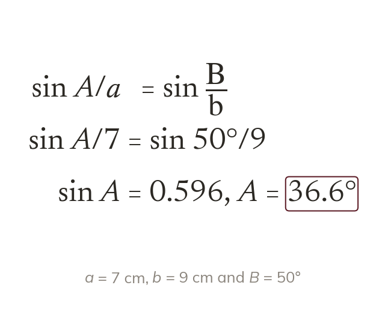
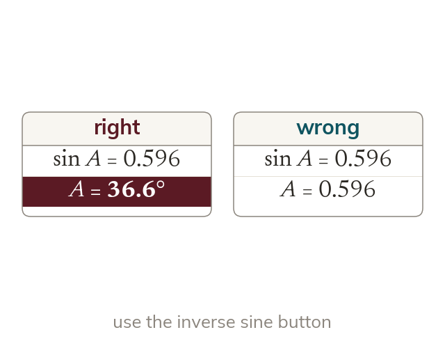
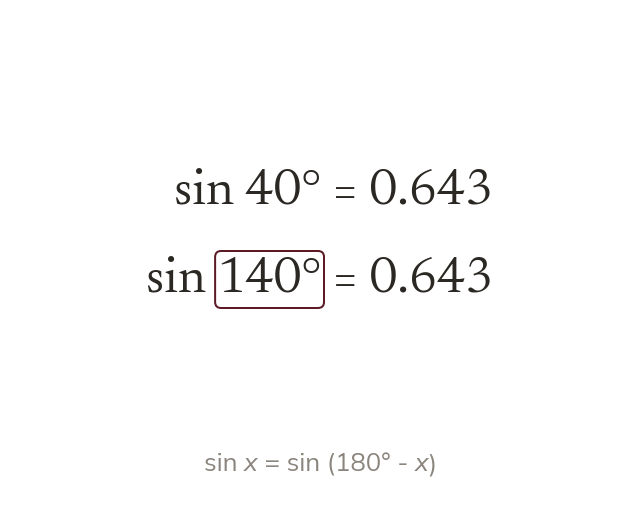
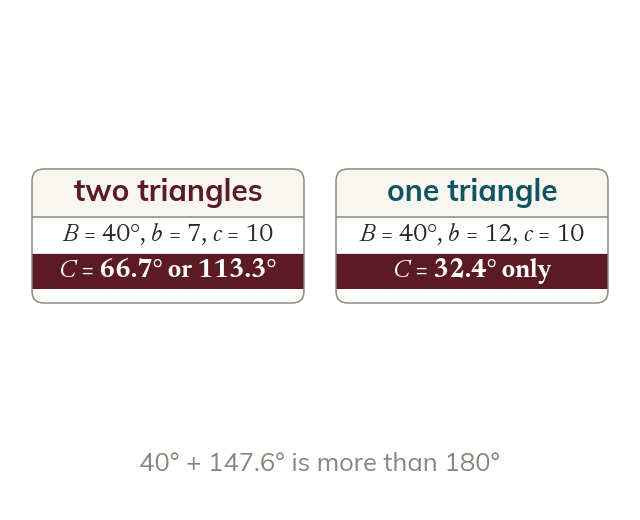

Sines on top to find an angle
To find an angle, write the rule with sines on top. Then one step leaves sin A alone.
A surveyor who measures two sides and one angle needs the other angles of the triangle. Today we turn the sine rule round to find angles, and meet the case where two triangles fit the same facts.
Work down the page at your own pace. Write every answer in your book first, then click to check it.
Read each card, then follow the worked examples one step at a time.

To find an angle, write the rule with sines on top. Then one step leaves sin A alone.

The rule gives the value of sin A, not A. The inverse sine turns that value into the angle.
Pick an answer. If it's wrong, the feedback tells you which mistake it was.
Read each card, then follow the worked examples one step at a time.

An angle and minus it have the same sine. So a value of sin C can give an acute and an obtuse angle.

The obtuse angle counts only if the triangle's angles still add to That happens when the given angle faces the shorter given side.
Pick an answer. If it's wrong, the feedback tells you which mistake it was.
Finished? Next lesson: 11H.2.4 The Cosine Rule for Lengths.
Log in, then search for a code to practise that skill.
Videos, worksheets and more on each part of this lesson.